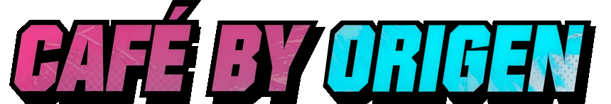
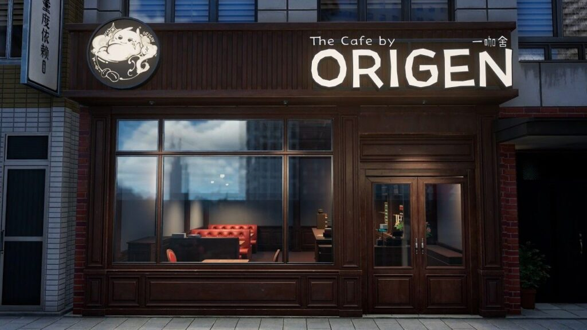
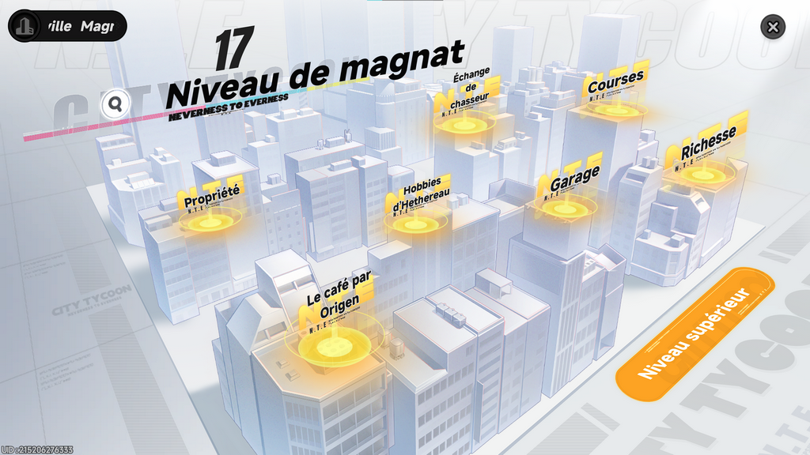
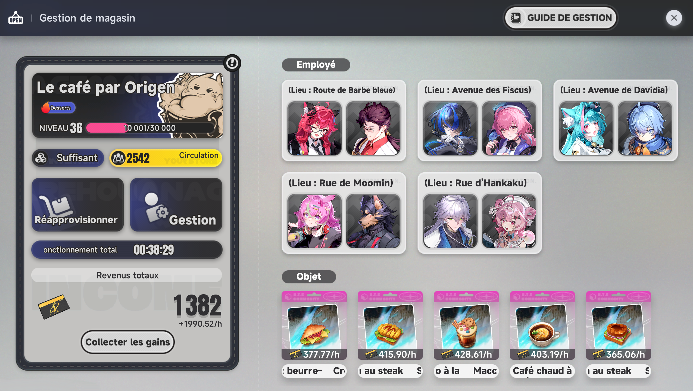
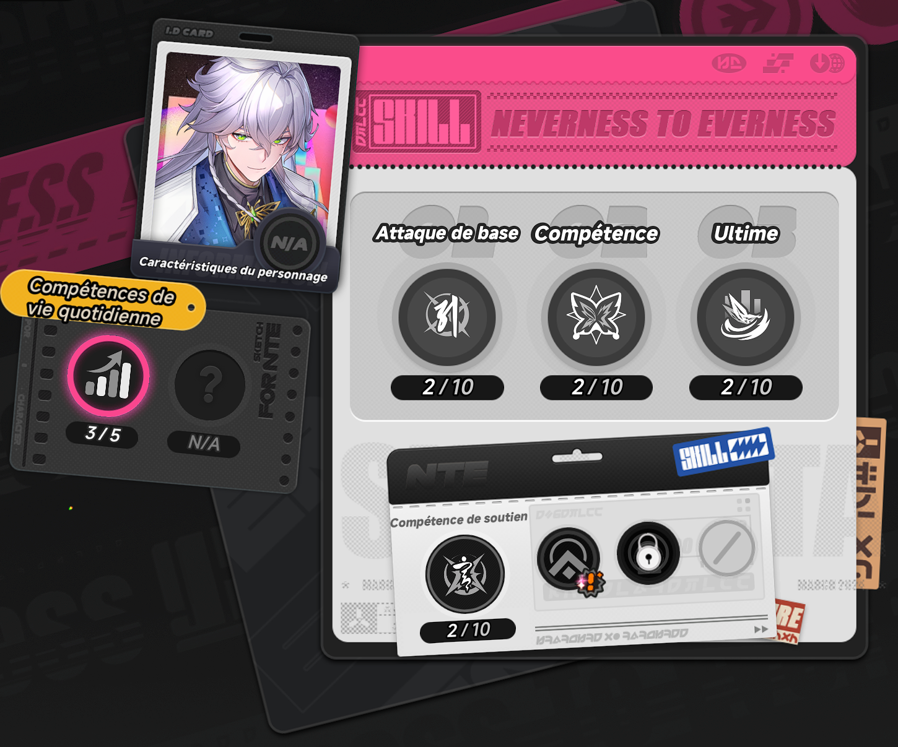
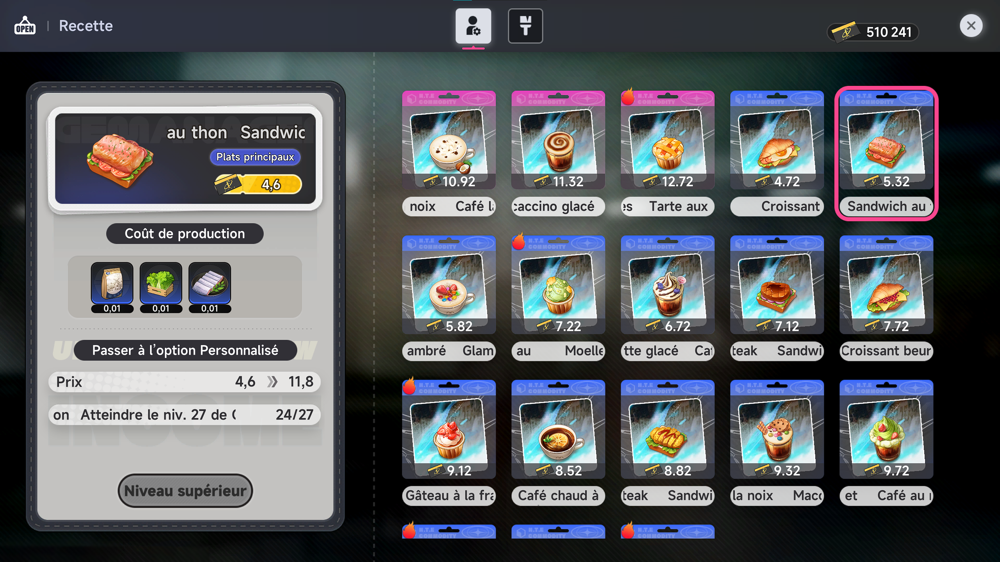
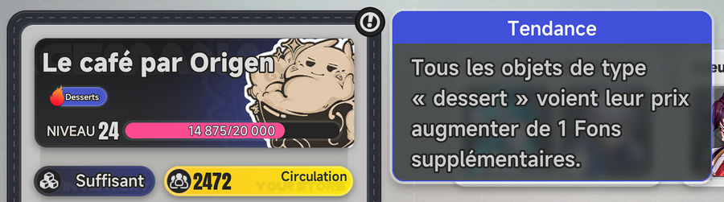

Tous les outils qu'il te faut pour évoluer dans le jeu !



Une des façons d'obtenir des Fons dans le jeu est en autre le mini-jeu de gestion des cafés.
Vous aurez la possibilité d'acheter et de gérer jusqu'à 5 café, vous permettant de générer des Fons même hors connexion.
Le but sera d'amélioré le rendement des gains de Fons / H afin d'avoir une rentrée passive de Fons facilement et tout les jours.
Pour débloquer les cafés il vous faudra atteindre le niveau 4 de Magnat de la ville.

Pour acquérir les cafés, vous avez deux solutions, soit aller directement sur place, soit aller dans une agence immobilière pour acheter l'un des 5 cafés disponible.
Vous ne pourrez pas tous les acheter tout de suite car ils se débloquent au fur et à mesure que vous augmenter le niveau de gestion.
Bien joué ! Vous avez au moins votre premier café. Maintenant il faut le gérer.
Pour accéder au menu gestion, ouvrez le magnat (F5) et cliquez sur Le Café par Origen.
Vous devriez donc arriver ici.

Dans ce menu plusieurs choses :
Je vous détaille tout ça juste en dessous, mais en gros c'est ici que tout ce passe.
Au fur et à mesure que vous collecterez vos gains vous gagnez des niveaux de gestion, qui permettent de débloquer des recettes, des cafés ou d'autres options
En ce qui concerne le guide de gestion, il sert surtout de ligne de conduite / objectifs pour faire évoluer vos cafés. Je vous met le détail ici mais vous y accèdez facilement en jeu.
La suite ? il faut améliorer vos café et choisir les bonnes recettes afin d'augmenter les gains.
Alors comment ça ce passe ?
Selon l'Esper que vous choisissez, différent effects de compétence de vie quotidienne s'applique. Certains sont mieux que d'autres pour le gains passif de Fons. Chaque café peut accueillir 2 employés (10 en tout).
Pas tout les Espers possèdent ces compétences et chaque compétence possède 5 niveaux

Je vous met ici le détail des compétences des Espers possédants actuellement ces compétences de vie quotidienne.
Maintenant que vos escla... employés sont choisis, vous pouvez vous choisir les recettes à mettre en vente dans la partie object.
Vous pouvez choisir jusqu'à 5 recettes (1 par restaurant) qui se débloqueront et évolueront en fonction de votre niveau de gestion.
Chacune des recette rapporte une certaine quantité de Fons par heure qui est modifiée en fonction de vos employés, du niveau de la recette mais aussi des meubles (on voit ça après).
Vous avez la possibilité de voir toutes les recettes à partir du menu gestion.

Attention toute fois ! Å partir du niveau 20 de gestion, vous débloquerez les recettes à la mode ou tendance.
Selon la tendance du jour (boisson, dessert etc), certaines recettes verront leur gains par heure augmenté de manière non négligeable.
Donc choisissez bien !

Maintenant que vos employés sont au travail et que vous avez choisis vos recettes, il faut ce faire livrer en matières premières (bah oui, ça va pas ce faire par magie voyons...dommage).
Pas d'inquiétude la liste de course se fait toute seule comme une grande, votre boulot sera de choisir quantité, ou du moins la durée durant laquelle vendre les recettes sélectionnées.
Et voilà, vous allez commencer à générer des Fons de manière passive sans rien faire ou presque.
Une dernière fonctionnalité existe pour les café.
Vous pouvez à tout moment jouer le boss avec une petite activité barist : La Sélection du Propriétaire.
Cette activité vous permet de vous retrouver derrière le comptoir et de préparer vous-même les commandes des clients sur une durée limité. Å l'instar de certains jeux de cuisine.

Comme pour la gestion de café passive, les Espers ici pourront vous aider
Ce mini-jeu permettra également de gagner des Fons en fonction des combos et de la satisfaction des clients, mais aussi quelques Annulith en fonction des étoiles gagnées. Elle vous coûtera de l'endurance urbaine.